负载建模：Agent 一站式性能分析平台
27 页 · QCC 结题汇报视觉初稿 · 内部数据与案例证据待填。PPT 正文可编辑，图形为 SVG；此页为本地审阅版。
01 · 负载建模：Agent 一站式性能分析平台
讲稿与填报提示
封面只保留主标题和责任人，不展示阶段导航、章节说明、痛点方案或页脚。责任人由用户填写；版本落款保留在文件元数据、SVG 描述、讲稿备注和附录中。
02 · 目录：从现状问题到改善成果
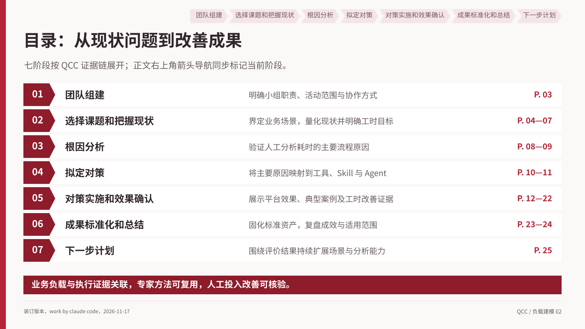
讲稿与填报提示
目录页为七阶段导航总览，不高亮单一阶段。页码范围按最终顺序计算。附录在七阶段正文之后。
03 · 围绕分析、工具与验证，明确小组协作分工
讲稿与填报提示
本页展示职责覆盖，不预设四个独立岗位。填写小组名称、注册编号、实际人数、活动次数等；无记录的项目删除。
04 · 从业务分析需求出发，界定本次改善范围
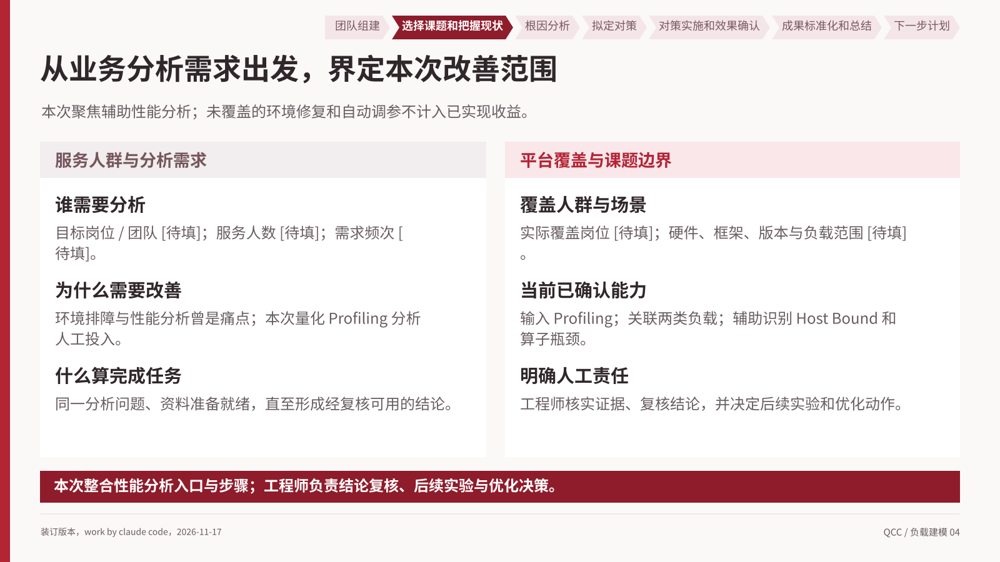
讲稿与填报提示
填写实际功能，不因“一站式”扩大能力。日志或环境检查已支持时可列为辅助能力，否则放入背景或未来计划。业务请求信息不一定包含于 Profiling，需要说明来源。
05 · 人工投入主要分布在哪些分析步骤？
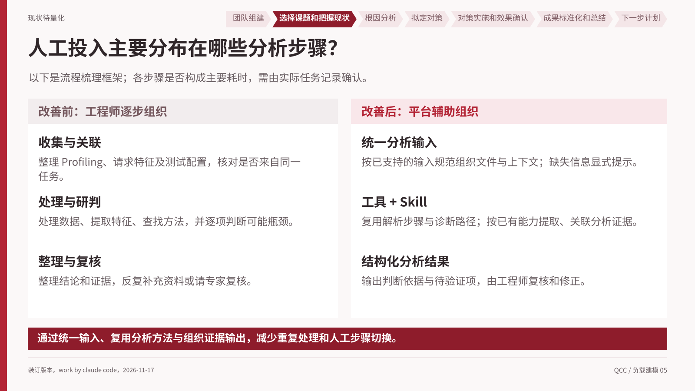
讲稿与填报提示
用真实流程替换。记录每名参与者在资料整理、处理、研判、报告、复核和返工上的时间。机器等待与人工值守分开。平台缺失输入提示、报告形式等具体功能需核对。
06 · 用任务级工时记录，把痛点转化为可衡量现状
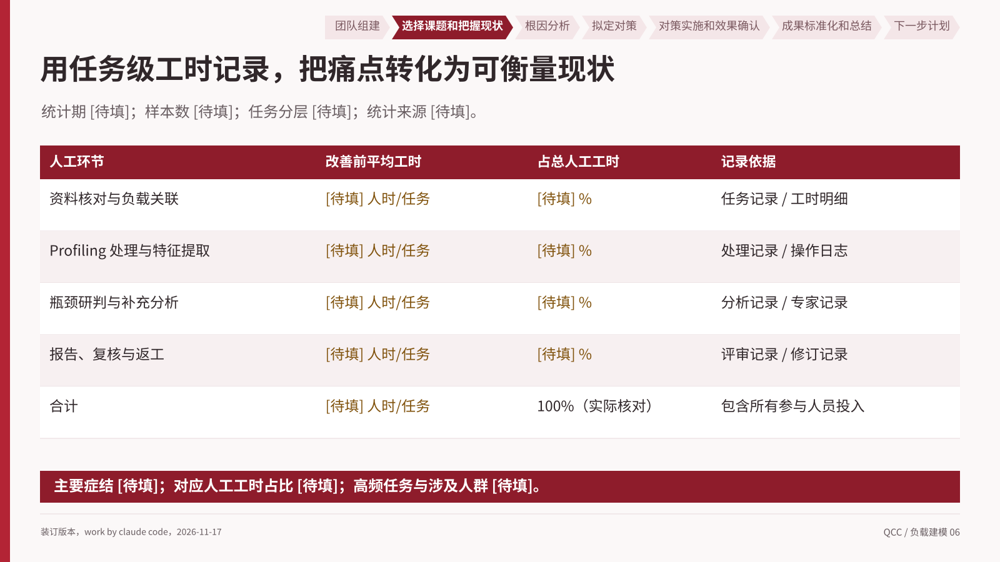
讲稿与填报提示
不用无数据的柱形图、饼图暗示比例。人时累计所有参与者投入。若历史无明细，注明回溯估计方法、样本与局限，不把估计写成精确实测。
07 · 以单次合格分析任务的人工工时评价改善效果
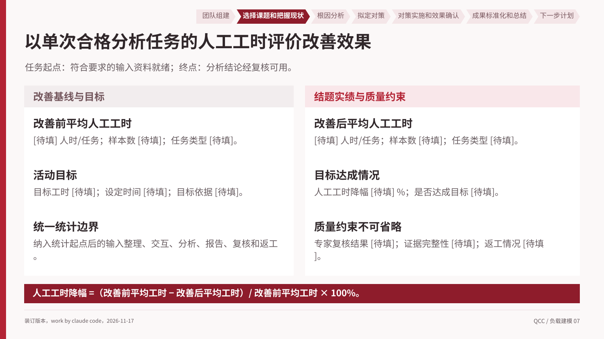
讲稿与填报提示
目标按真实活动记录填写，不倒写事前目标。无原量化目标时说明结题指标建立时间。起点之前的 Profiling 采集与上游数据生产不纳入；起点后的资料组织、上传、核对等纳入两组。必要时报告中位数和范围。
08 · 沿人工耗时追溯原因，而非把性能瓶颈当作 QCC 根因
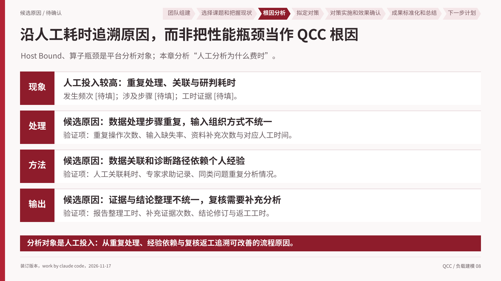
讲稿与填报提示
候选原因框架，不是已完成的要因确认。保持“人工工时高”为中心，不将“缺少 Agent”直接当根因。
09 · 逐项确认主要原因，让对策建立在证据上
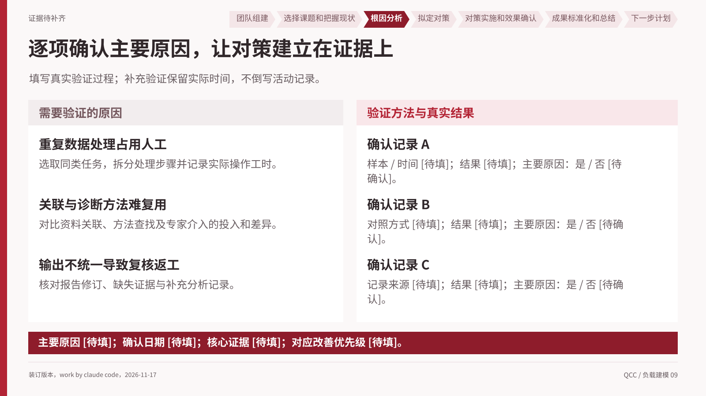
讲稿与填报提示
填入真实验证标准。对照说明任务难度、工程师熟练度、输入完整性和版本差异。删除非主要原因，主要原因编号用于对策追踪。
10 · 将主要原因映射到工具、Skill 与 Agent 的不同职责
讲稿与填报提示
有真实选型时补入方案比较，不虚构评分。解释组件减少哪些人工步骤。输出字段和工具组合按现有实现核对。
11 · 通过三层结构，关联负载、方法与诊断证据
讲稿与填报提示
逻辑分工而非实际部署架构。按平台调整名称。缺失输入、格式不支持或分析失败时，说明实际提示、终止或转人工行为。
12 · 将专家分析步骤沉淀为可调用的 Skill
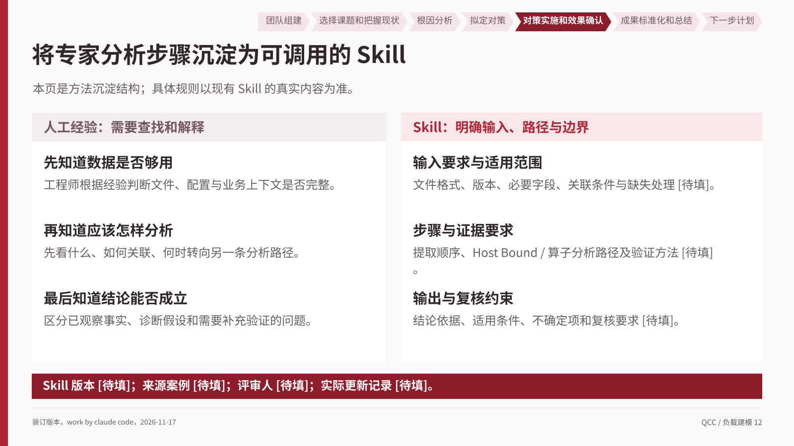
讲稿与填报提示
Skill 尚缺的要素移至下一步，不描述为全部完成。既不简化为提示词，也不声称模型可代替所有专家判断。
13 · 负载建模：把“什么请求”与“如何执行”关联起来
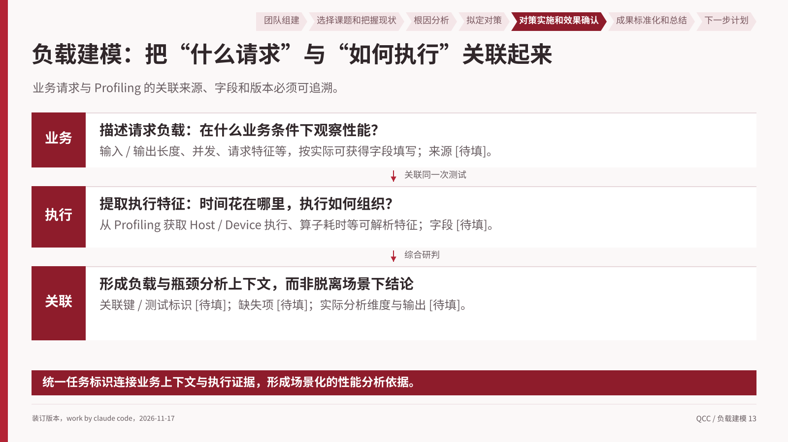
讲稿与填报提示
补齐建模实际输出，如结构化特征、分类或参数化模型。未确认预测能力，不写容量预测或跨负载外推。
14 · Host Bound：从执行现象走向有依据的瓶颈判断
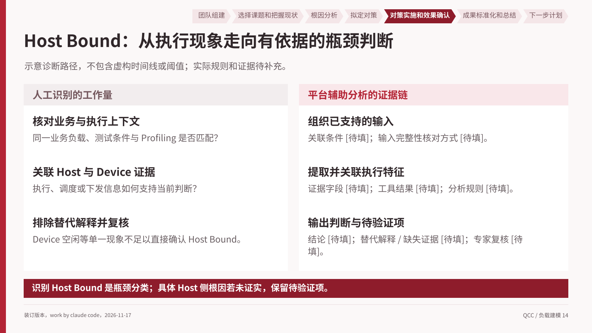
讲稿与填报提示
不暗示已支持所有 Host 侧子原因。证据按工具可得性填写，不将空闲、同步等待或低利用率一概等同 Host Bound。
15 · 算子瓶颈：把重点算子与业务负载关联分析
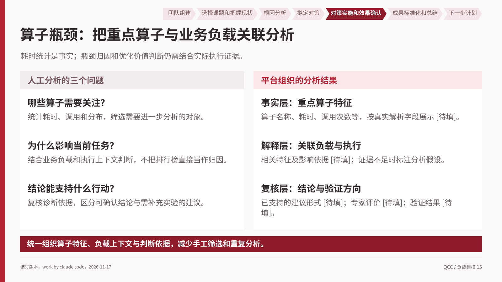
讲稿与填报提示
如果平台只支持排序和初步定位，应调整标题和正文，不将优先级判断写为完整实现。关键路径、并行与重叠按可解析信息填写。
16 · 平台效果：一站式输入与性能分析结果
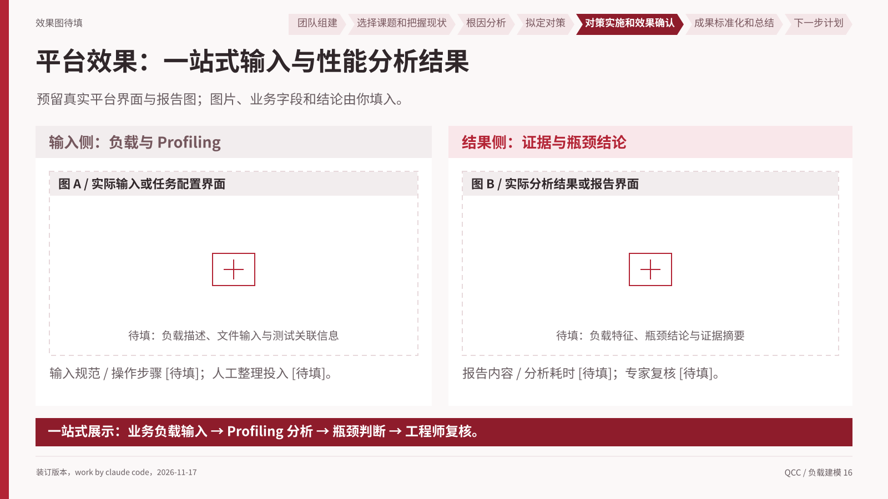
讲稿与填报提示
本页两块是真实图片占位，不是仿制界面。插入实际脱敏截图；无界面时可用真实报告或 SVG 重绘。输入与输出来自同一任务。PPT 原生图片占位框插图后覆盖框内提示，外侧说明仍可编辑。
17 · 案例一：Host Bound 分析效果
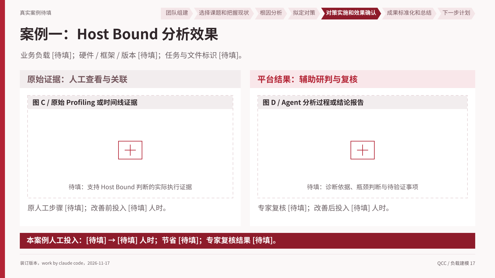
讲稿与填报提示
用同任务原始执行证据和平台报告填充左右图。不把设备空闲直接等同 Host Bound。两组工时都含整理、分析、复核和返工；不同任务说明匹配方法。
18 · 案例二：算子瓶颈分析效果
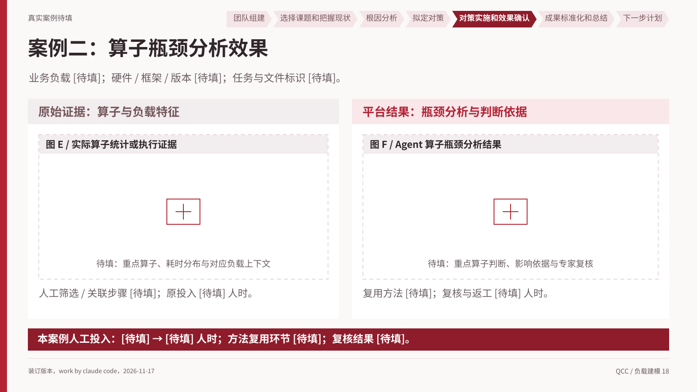
讲稿与填报提示
算子名、时间与结论由实际材料填写。耗时排名不等于瓶颈归因；未验证的优化建议不算已获得的性能收益。插图后编辑下方工时和证据说明。
19 · 效果确认：比较人工工时，而非只比较报告生成速度
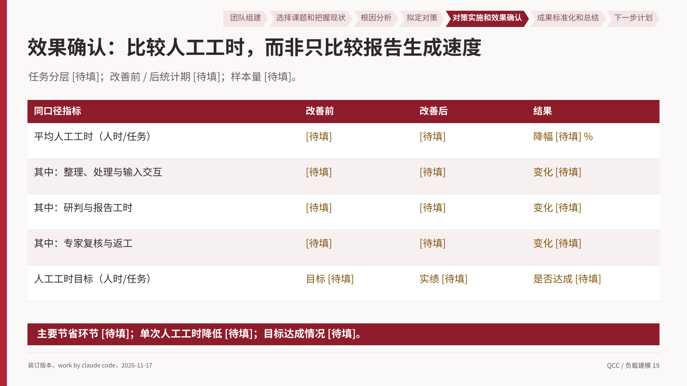
讲稿与填报提示
未绘制伪造比例。所有人时纳入，任务匹配或分层；汇总披露权重，避免任务结构变化制造改善。
20 · 改善效果图：人工工时对比与收益分布
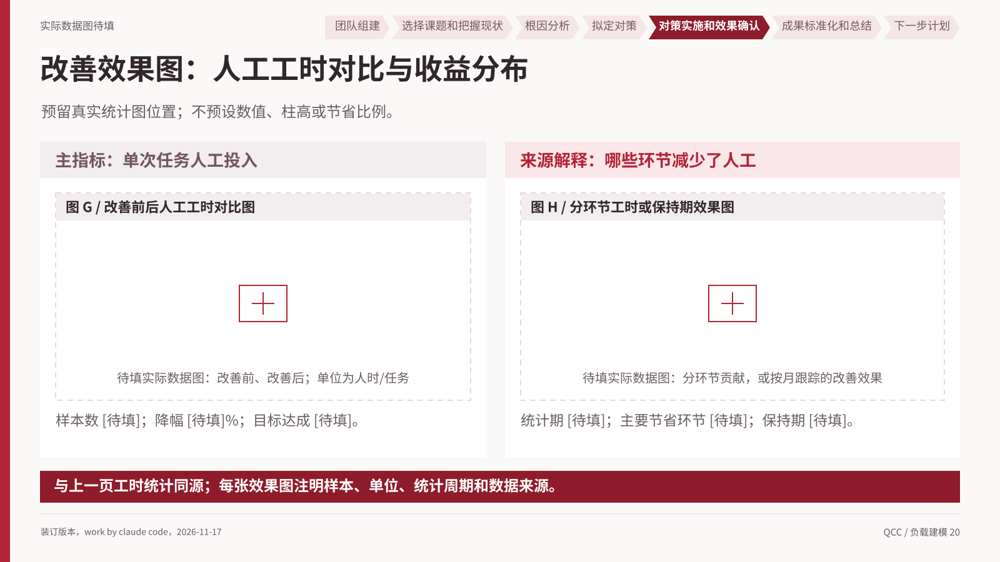
讲稿与填报提示
效果图占位，未画无数据的假柱形。建议左侧同一零基线前后工时对比，右侧分环节对比或保持期趋势，不混用量纲及双纵轴。可插真实图或用真实值绘制 SVG。
21 · 用可比任务与专家复核，确认收益没有以质量换取
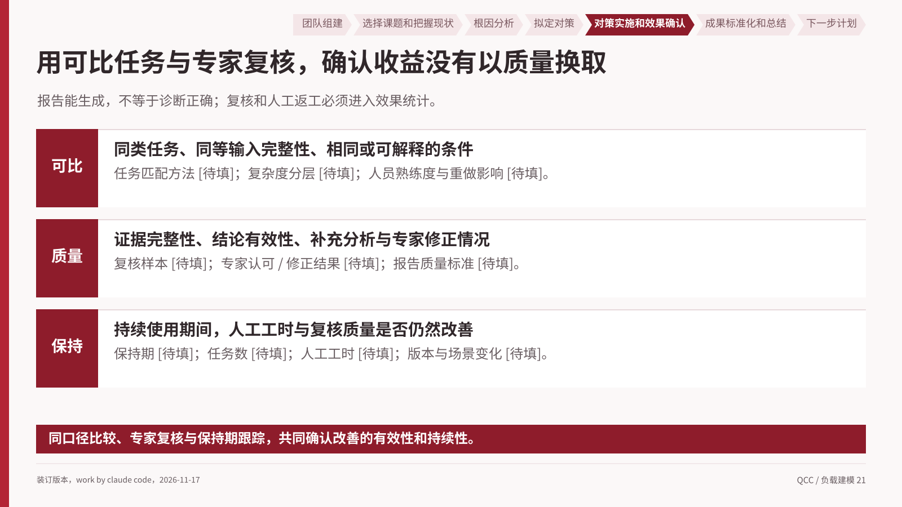
讲稿与填报提示
定义复核标准。如计算准确率或一致率，说明分母、分析单元、不确定结论处理；报告生成率不能替代诊断正确率。结论强度与样本设计相称。
22 · 覆盖与月活证明应用，工时与质量证明价值
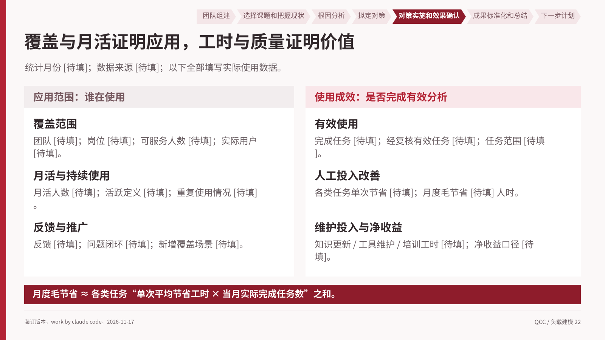
讲稿与填报提示
月活按真实定义，可用发起有效分析的去重用户，而非登录。覆盖不等于使用。不要用月活乘单次工时算收益。维护、调用等成本分别说明，无财务核算不填金额。
23 · 把有效方法固化为可维护、可复核的标准资产
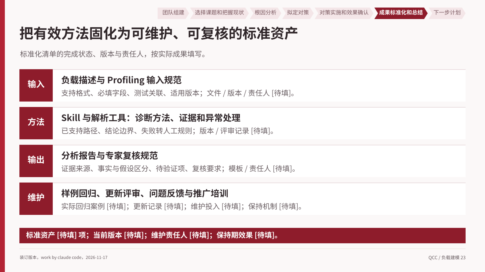
讲稿与填报提示
基线配置若实际纳入平台，则补入输入标准。回归样例需脱敏。版本、解析器、Skill 更新后的验证按真实机制填写。
24 · 总结改善成果，同时交代适用范围与不足
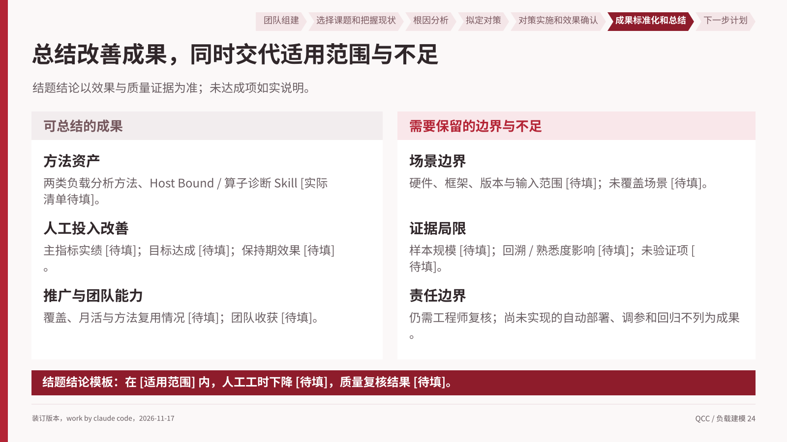
讲稿与填报提示
可以保留阶段成果或未达标说明，不把未来能力算作成果。无证据不写显著、领先、完全替代专家。
25 · 在已验证范围内持续改进，逐步扩展分析能力
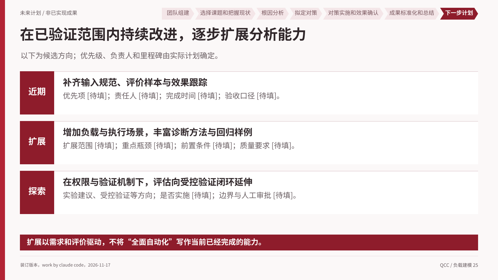
讲稿与填报提示
按真实路线图替换，验证闭环不是默认承诺。线上权限、隔离、回滚和人工审批另行设计。结束回扣减少人工与复用专家方法。
26 · 补齐六类资料，形成可核验的结题版本
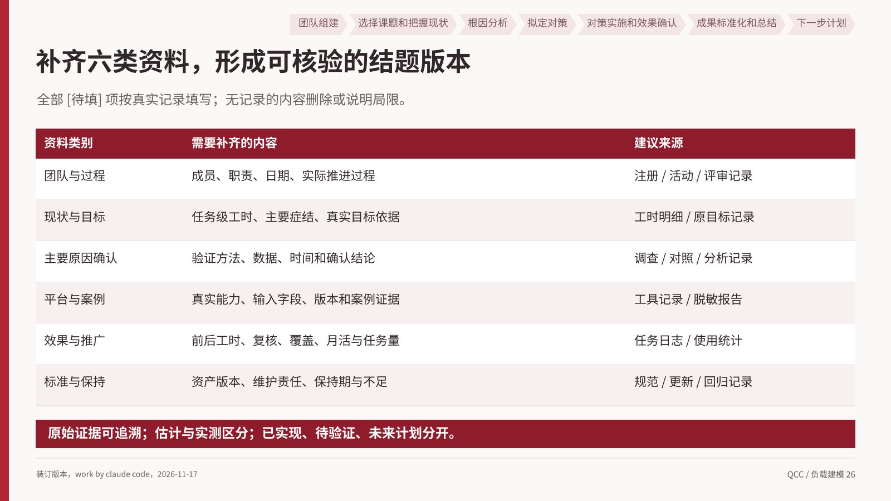
讲稿与填报提示
本附录供填报与审稿，正式汇报可隐藏。每个数值保留周期、单位、分母、来源、版本与复核人。领导 PPT 的事实可由用户自行摘录，无需上传原文件。
27 · 遵循 QCC 证据链，按实际记录组织成果
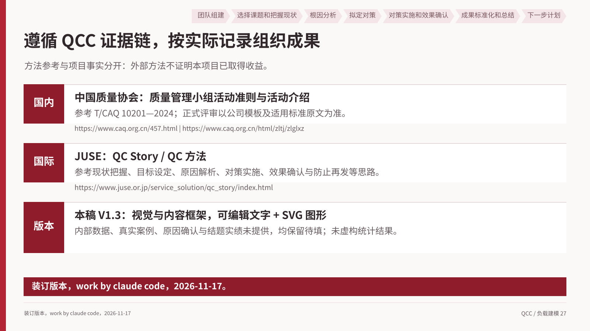
讲稿与填报提示
参考链接检索于 2026-11-17。协会公告部分正文与附件未能完整读取，不声称逐条引用或已核验全部标准要求。标准版本信息参考官方检索与公开预览；JUSE 页面支持所归纳的 QC Story。正式报奖核对适用标准和公司评分表。